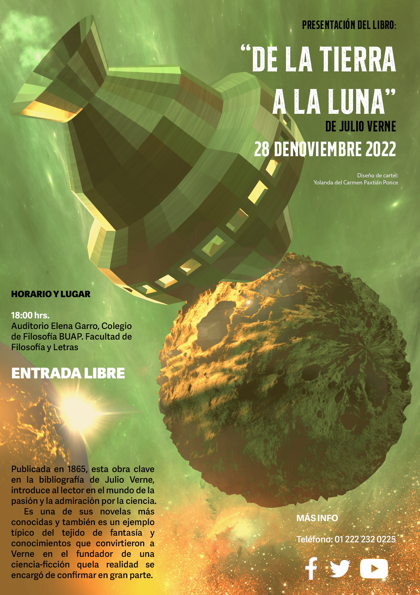

Doll B (2022). Este trabajo esta inspirado en la moda de los años 20’s, creando un
personaje para mostrar este tipo de estilo.
Casa Soñada (2022). En este trabajo se plasmaron todas las ideas de una casa ideal dentro de la fantasía.
Core W (2021). Este trabajo es parte de una serie de colección de la famosa serie inktober que se lleva a cabo anualmente en Instagram.

Iluartist (2020). Desarrollo de marca de la página iluartist en Instagram.

aerreq+ (2020). Desarrollo de marca de un despacho de arquitectos.

poong (2020). Desarrollo de una marca propia de Diseño Gráfico.

KPop (2022). A partir de formas tomadas de fotografías de objetos, se generaron personajes adaptados a las siluetas de estos.

A la luna (2022). Se genero un modelado 3D en Blender, para crear la ambientación de un escenario que estuviera basado en la novela clásica.

Khop (2022). A partir de formas tomadas de fotografías de objetos, se generaron personajes adaptados a las siluetas de estos.

Cohet (2022). Se construyo un modelo 3D para ambientar el ecosistema de un espacio de fantasía, en el que se aplicaron texturas.

Solitario (2022). Cree un espacio en el que el faro es el personaje principal, reflejando la guía del pequeño bote que lo acompaña.

Salsko (2022). Creación de un personaje a partir de una silueta, se adapto a diferentes estilos musicales.